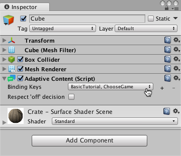

Adaptive Content Component
Add AdaptiveContent components to allow the Tutorial Manager to control your tutorial GameObjects. Each component has a Binding Keys property that you use to bind its parent GameObject to one or more tutorial steps. As the player advances through a tutorial, the Tutorial Manager turns the bound GameObjects on and off (gameObject.SetActive(true) or gameObject.SetActive(false)).
You can initiate any dynamic sequences within a step using MonoBehaviour events. For example, Unity invokes OnEnable when a GameObject is turned on. Remember that child GameObjects are only enabled when their parent GameObject is enabled, so be careful when nesting adaptive content.
You can bind adaptive components to more than one tutorial step to share GameObjects across multiple steps and multiple tutorials.
By default, adaptive components are never turned on when the decision returned by GetDecision() is false. You can use the Respect ‘off’ decision property to control this behavior:
- If you set a component's Respect ‘off’ decision property to true, that component only turns on when the Tutorial Manager has decided the tutorial should be shown (
GetDecision()returns true). - If you set the property to false, then that component turns on whenever the associated tutorial step is played, no matter which decision has been made about showing the tutorial.
Note: Using AdaptiveContent components is optional.
AdaptiveContent properties
The AdaptiveContent component turns on its parent GameObject when the Tutorial Manager starts one of the tutorial steps to which it is bound and turns it off when the step is complete.

A GameObject with an AdaptiveContent component
| Element | Purpose |
|---|---|
| Binding Keys | Each key binds the AdaptiveComponent to a tutorial and step. (Enter the keys for your tutorials and steps on the Tutorial Editor window.) |
| Binding +, - buttons | Click + to add bind the component to an additional tutorial step. Click - to remove a binding. Each component must have a minimum of one binding. |
| Respect ‘off’ decision | When checked (true), the associated GameObjects are only enabled when the Tutorial Manager has decided the default tutorial should be shown (TutorialManager.GetDecision() returns true). When unchecked (false), the associated GameObjects are enabled whenever the tutorial step is started by the Tutorial Manager. |
Add an AdaptiveContent Component
Once you have defined the steps of your tutorial configuration, you can add adaptive components and bind them to one or more steps. The Tutorial Manager turns the adaptive components in your tutorial on and off as players advance through your tutorial.
Note: The Tutorial Manager turns off any GameObjects containing adaptive components when the scene loads (using GameObject.SetActive(false)) and turns them back on when the bound tutorial steps are played. Since Unity automatically disables child objects with their parents, avoid nesting adaptive components. (Nesting components can lead to the wrong behavior when you bind them to multiple tutorial steps.)
To add an AdaptiveContent component:
Select the GameObject in your scene Hierarchy.
In the Inspector window, click Add Component.
Click Analytics in the Add Component menu.
Pick the AdaptiveContent component.
Bind the component to a tutorial and step using the Binding Keys list.
To bind a GameObject to more than one tutorial step, click the + button next to the Binding Keys property.